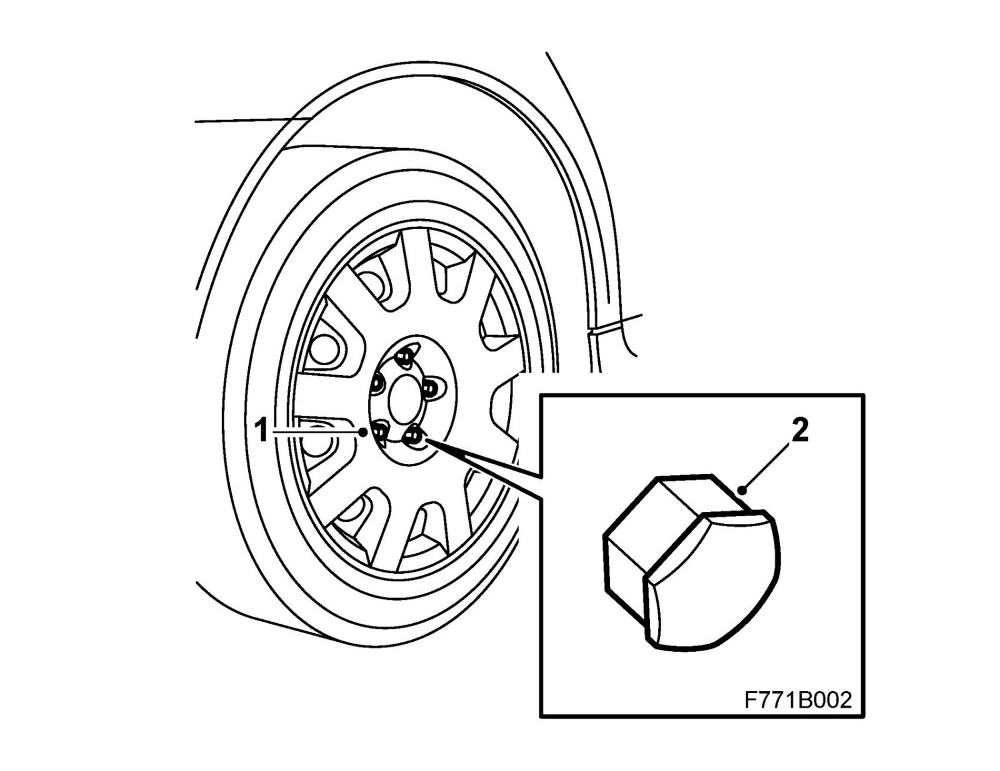
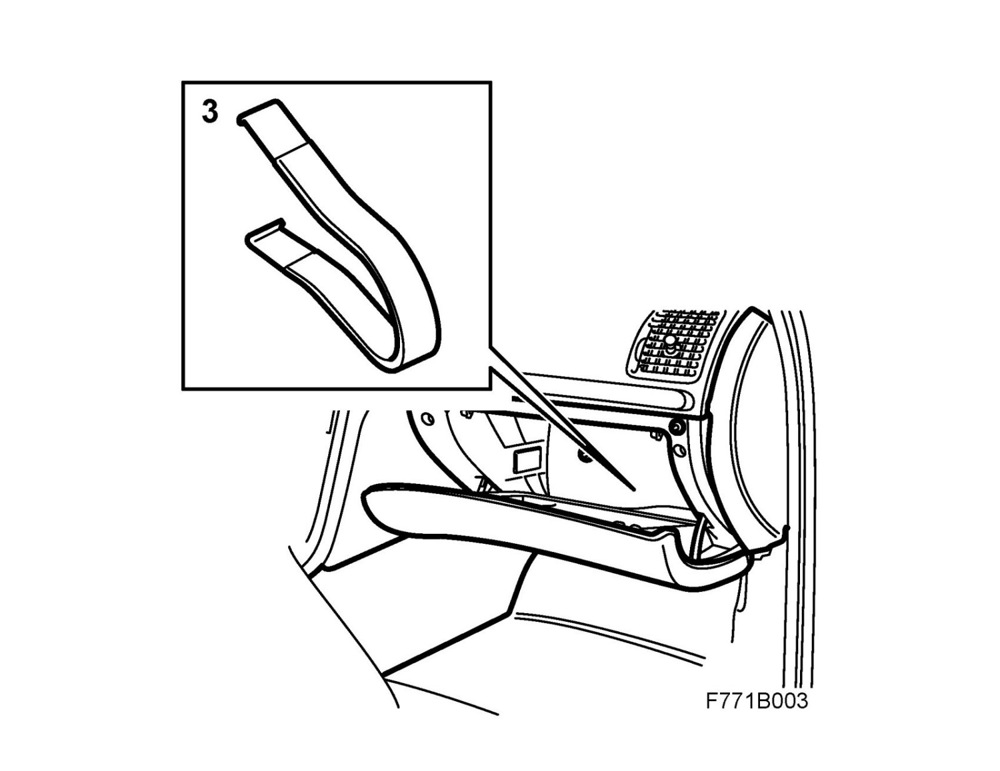

Operation CHARM
: Car repair manuals for everyone.
Home
>>
Saab
>>
2011
>>
9-3 FWD (9440) L4-2.0L Turbo
>>
Repair and Diagnosis
>>
Maintenance
>>
Wheels and Tires
>>
Wheel Stud / Lug Nut
>>
Service and Repair
>>
Fitting Wheel Bolt Caps
Fitting Wheel Bolt Caps
Fitting wheel bolt caps.
1.
Lubricate the bolt head with Vaseline or the like.

2.
Fit the caps on the wheel bolts.
3.
Stow the removal tool in the glovebox.
